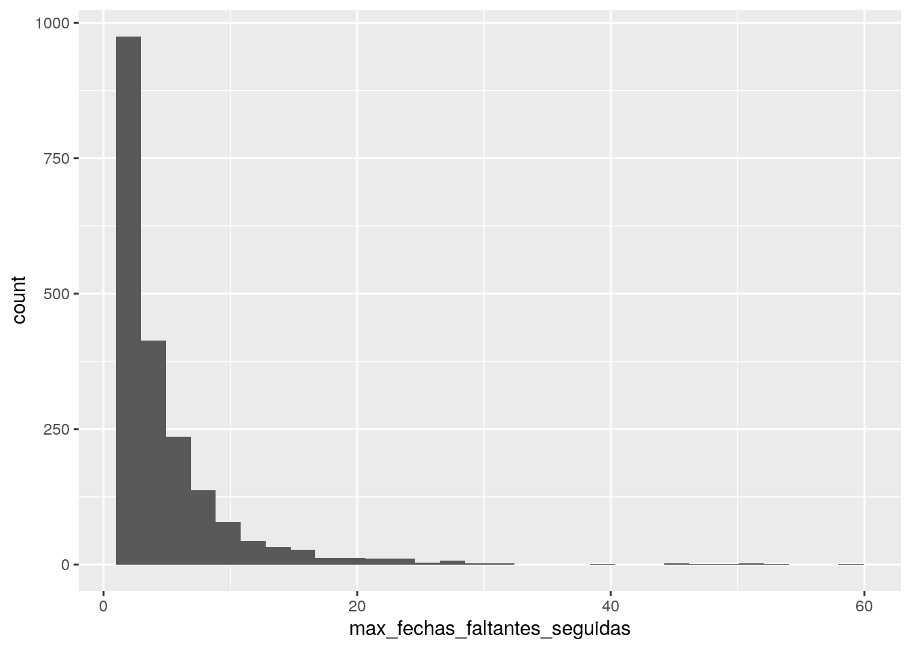

Capítulo 4 Feature Engineering
Hasta este momento, se conoce el comportamiento o características de cada crédito en una fecha de corte específico. En el ejemplo en la figura <ref> sabemos que el cliente \(X\) pagó el 75% puntual y el 25% impuntual en el corte 1, pero esa información no nos aporta información del comportamiento de pago del cliente \(X\) en el pasado: ¿esta es la primera vez que un porcentaje de su pago es impuntual?, o ¿suele hacer pagos impuntuales frecuentemente?
Para absorber información del comportamiento anterior de los clientes, es posible usar promedios históricos. Un inconveniente al usar el promedio aritmético es que el pasado lejano pesa igual que la historia reciente. Para evitar este problema, podemos usar una función de decaimiento. Es decir hacer un promedio ponderado que le asigne más peso a la historia reciente.
Existen muchos métodos para obtener series de pesos que tengan decaimiento y que sumen uno. Algunos métodos obtienen pesos que decaen demasiado rápido, como el decaimiento exponencial. El half-life es un concepto que ayuda a controlar que tan rápido deben decaer el tamaño de los pesos.
Un half-life se alcanza cuando se acumula la mitad de la suma de los pesos. En nuestro contexto el decaimiento ocurre de lo más reciente a lo más lejano. Por ejemplo, un half-life de 3 meses en el contexto de series con observaciones diarias implica que:
- los pesos diarios asignados en los tres meses más recientes acumulan aproximadamente 0.5, y
- los pesos para el resto de la serie acumulan aproximadamente 0.5.
De esta manera, series de pesos con un half-life de tres meses decaen más rápido que series de pesos con un half-life de un año.
En el <Anexo> se incluye el detalle teórico del decaimiento geométrico.
Utilizamos decaimiento con half-life en las series de tiempo del saldo y el porcentaje puntual, impuntual y de rescate de los clientes. La figura <ref> muestra una serie tiempo de saldo suavizado con un half-life de tres meses. Como se observa, el decaimiento no solo incorpora la información del pasado en cada momento, también elimina el ruido en la serie.
colocadora_ej = 15691
creditos %>%
filter(pkcolocadora == colocadora_ej) %>%
select(fechaCorte,
saldoActual,
saldo_prom_decay) %>%
rename(date = fechaCorte) %>%
gather(key, value,-date) %>%
ggplot(aes(x = date,
y = value,
colour = key)) +
geom_line()
Aunque se realizaron varias tareas de exploración y limpieza, las series de tiempo de pagos y saldos de los clientes en algunas ocasiones muestran “picos”. Estos picos o registros atípicos los suavizamos con el decaimiento.
Se construyeron seried de tiempo adicionales para capturar la magnitud de los cambios y la volatilidad en los saldos y pagos de los clientes. En el anexo <ref> se describe la construcción de estas variables.
La figura <